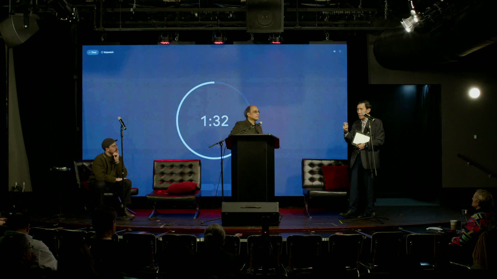
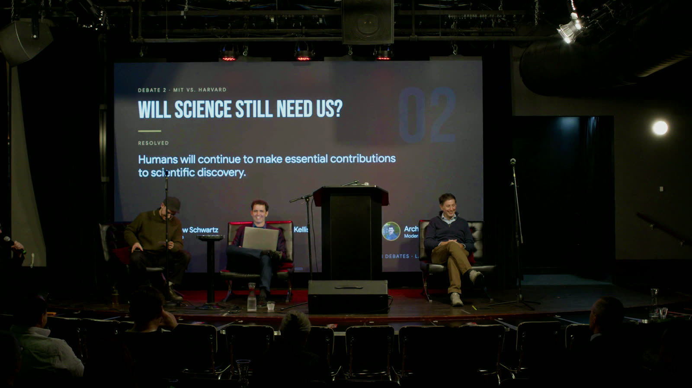
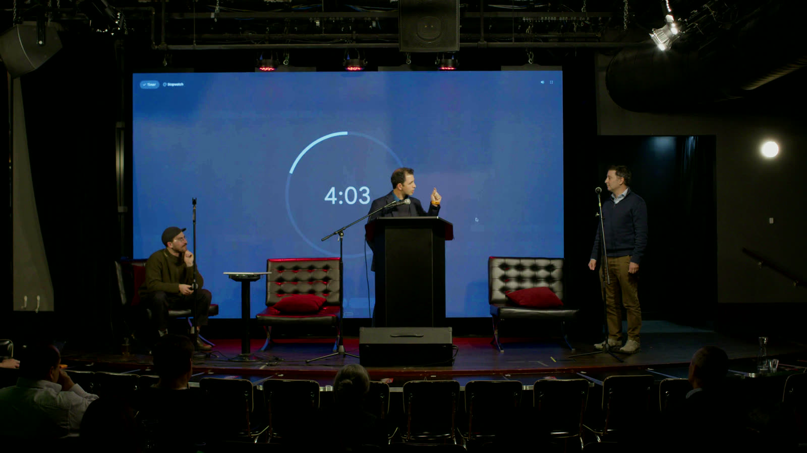
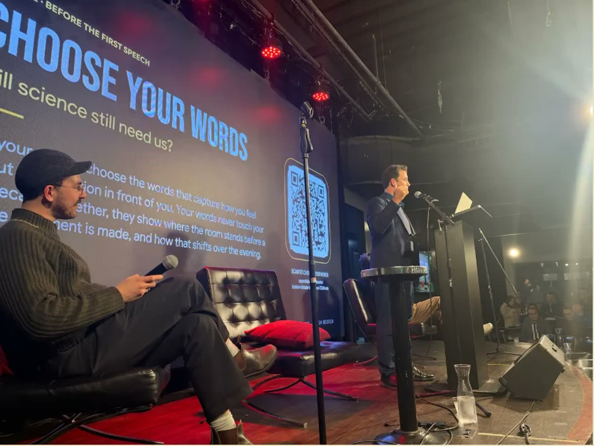
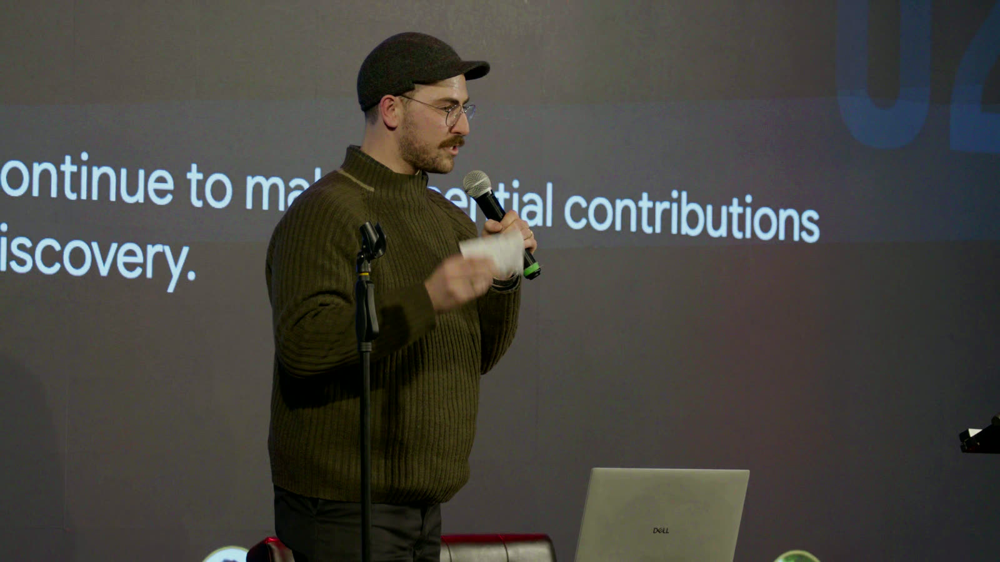
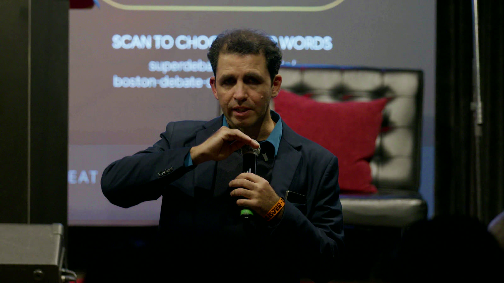

China, America and the AI race
Yasheng Huang (MIT Sloan) and Bhaskar Chakravorti (Tufts) debated whether the 2026 midterms will help China more than America in AI.

Archie Stapleton hosts live philosophy and debate events for schools, universities and the public. In November he hosted and moderated SuperDebate Boston: four professors from MIT, Harvard and Tufts, two debates and a full comedy club.


Yasheng Huang (MIT Sloan) and Bhaskar Chakravorti (Tufts) debated whether the 2026 midterms will help China more than America in AI.

Manolis Kellis (MIT) and Matthew Schwartz (Harvard) debated whether humans will keep making essential contributions to scientific discovery.



A live debate or ethics discussion that gets the whole room voting and arguing.
Practical sessions on running ethics discussions and debate in class.
Hosting and moderation for public debates, conferences and university events.
Talks and discussions for adults. A Boston philosophy club starts in January.